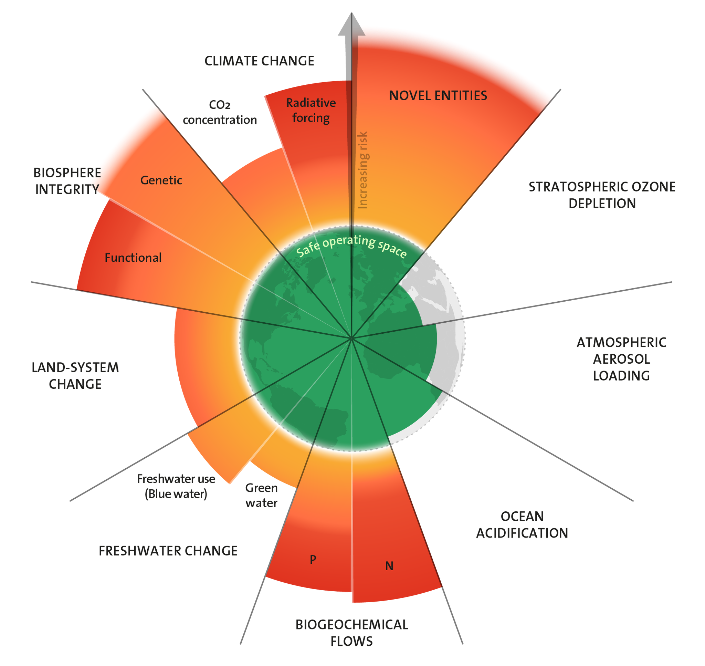

Planetary boundaries
A.k.a. Past the Boundaries
The planetary boundaries concept presents a set of nine planetary boundaries within which humanity can continue to develop and thrive for generations to come. These nine boundaries are: novel entities, stratospheric ozone depletion, atmospheric aerosol loading, ocean acidification, biogeochemical flows, freshwater change, land-system change, biosphere integrity, and climate change.

As can be seen in the figure we are currently beyond six of the nine planetary boundaries.
Outgoing connections:
- Access to food
- Access to water - Water is life.
- Biodiversity loss
- Catastrophic risks - We have no way of knowing for certain what catastrophes lie beyond these boundaries. We'll know soon enough.
- Climate change
- Delusional domination of nature - A mastery of nature has always entailed living and thriving within the boundaries.
- Desertification
- Ecological crisis
- Extreme weather
- Fear - I have heard plenty of arguments claiming that environmentalists should settle for a less apocalyptic way of getting their message across in order not to make people fearful or depressed. Tough shit. Fear and depression sounds like a decent start to me. Woe is me.
- Finite games - The model of the planetary boundaries helpfully illustrates the finitude of modernity.
- Genetic modification
- Illusion of competence - Importantly, this model is only just that, a model. It simplifies the living (dying) state of the earth into systems and clearly bounded characteristics and dynamics. It has been simplified largely, I assume, for communicative purposes. For this, it seems to be useful. Just like with the predicament landscape we shouldn't confuse endless descriptive model chatter for any real competence.
- Illusion of understanding
- Insect loss
- Lack of the longterm
- Limits to growth - The planetary boundaries can be viewed as one concrete model of limits to growth.
- Mass climate migration - The crossing of boundaries is unevenly distributed across the earth.
- Microplastics
- Mistreatment of animals - Global mistreatment.
- Mistreatment of other humans
- Naive progress narrative - Any progress narrative that excludes notions of planetary boundaries is naive and should be regarded as drug-induced hallucinatory nonsense.
- Ocean acidification
- Poisoning the water, the earth, the air - The dose makes the poison, he says, winks, and bites off his last cyanide tooth.
- Pollution
- Soil erosion
- Synthetic biology
- The desacration of all places
- Tipping points
- Unheeded warnings